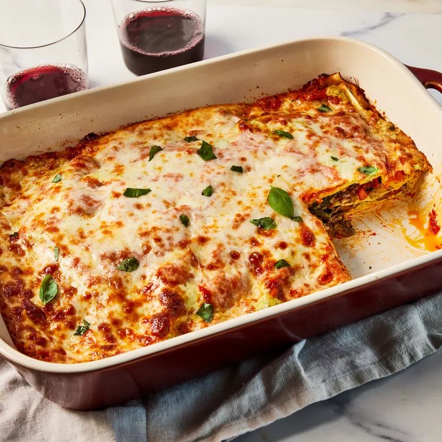

Lasagna

Description:
Lasagna is a classic Italian dish made with layers of pasta sheets, rich meat sauce, creamy béchamel, and melted cheese. This hearty and comforting meal is perfect for family dinners or special occasions, offering a satisfying blend of flavors and textures in every bite.
Ingredients:
- 12 lasagna sheets
- 500g ground beef or sausage
- 2 cups marinara sauce
- 1 onion, finely chopped
- 3 cloves garlic, minced
- 2 cups ricotta cheese
- 1/2 cup grated Parmesan cheese
- 2 cups shredded mozzarella cheese
- 2 tablespoons olive oil
- Salt and pepper to taste
- Fresh basil or parsley for garnish
Steps:
- Preheat your oven to 375°F (190°C).
- Cook the lasagna sheets according to the package instructions. Drain and set aside.
- In a large pan, heat olive oil over medium heat. Add the chopped onions and sauté until softened.
- Add the minced garlic and ground beef, cooking until the meat is browned. Season with salt and pepper.
- Stir in the marinara sauce and let it simmer for 10-15 minutes.
- In a separate bowl, mix the ricotta cheese with the grated Parmesan cheese.
- In a baking dish, spread a layer of meat sauce at the bottom. Add a layer of lasagna sheets, followed by the ricotta mixture and a sprinkle of mozzarella cheese.
- Repeat the layers until all the ingredients are used, finishing with a generous layer of mozzarella on top.
- Cover the dish with foil and bake for 25 minutes. Then, remove the foil and bake for another 15-20 minutes until the cheese is golden and bubbly.
- Let the lasagna cool for a few minutes before serving. Garnish with fresh basil or parsley.